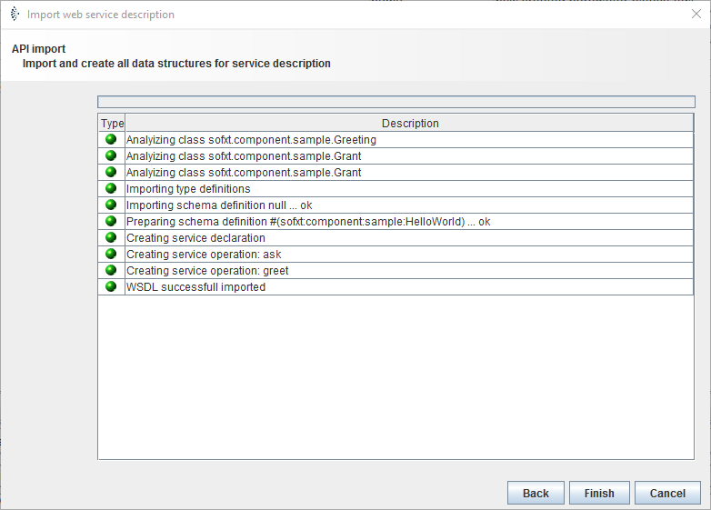
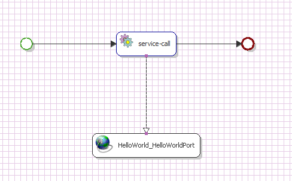
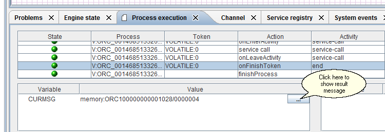

Create your first Extended Component

Topic content
Description
The Orchestra component framework API is a new way to extend Orchestra with custom made components with the ability to have their own configuration and Orchestra provides an UI editor to configure the component.
Here you learn how to implement your own component and how to provide your own configuration with attributes and groups and parameters. Anything like user names, passwords, control parameters, Database connection String or whatever you need for your component to work.
Problem to Solve
The goal is it to develop a simple Hello World component sending a question/answer dialog to the receiver using data from the configuration. This example contains all relevant steps needed to start right away.
Step Overview
In order to create and use your first extended Component the following steps need to be followed
1.Design and Implementation of component classes
2. creating configuration xml files for this component
3. Deploy the component in a jar file
4. installation of the component
5.configure the component using the editor
6. using the component in an example scenario
Prerequisites
You need basic knowledge of Java Programming and an Integrated Development Environment like eclipse to create, compile and package your component
You need the Orchestra component architecture API jar for this example.
Used Concept
Design a simple interface and implement the corresponding class.
Use all necessary steps to use your component with the framework
Steps
The following text explains step by step how to create your first extend component.
Step 1 - Design and Implementation of component classes
First we have to define what we want our component to do.
In this example our component should have one method to ask a question and one to greet someone.
The response message is in both cases a line of text, which is a combination of the data the user provides in the request and the data predefined in the configuration of the component.
The input parameters are a name and the greeting or the question.
The method greet returns a string like this: Karl says : "Hello". Walter replies :"Hi".
The method ask returns a string like this: Karl asks: "How do you do?" Willi answers: "Fine";
Our service interface is defined as follows:
HelloWorld Java interface source |
|---|
package sofxt.component.sample;
|
For simplicity reasons we use only String variables, but you can use any JavaBeans conform object in your component as input or output parameters.
You can also use collections of these objects ( only HashSet and ArrayList are supported) as well. This gives you the power to create arbitrarily complex input and output messages.
For example instead of the two parameters name and greeting you could create an Object Greeter like this:
Greeter Java class source |
|---|
package sofxt.component.sample;
|
The method greet would look like this:
public String greet(Greeter greeter);
Our service class must implement the previously defined HelloWorld interface and in order to be used with the Orchestra component architecture framework the ManagedComponent interface.
The JavaDoc of the component archictecture API contains a all information you will need to implement your own ManageComponent and how to implement the IConfiguration interface and its related interfaces like IConfigGroup and IConfigParam.
In this Best Practice we just discuss how to implement the most important methods.
The full source code of this example and the JavaDoc of the Orchestra component archictecture API can be obtained from Orchestra support. Just write an e-mail to Orchestrasupport@soffico.de.
We create the implementation class HelloWorldImpl.
HelloWorld interface implementation source |
|---|
package sofxt.component.sample; +" says :\n"+greetParamGroup.findConfigParam( "greeting" ).getValue(); +" answers :\n"+replyParamGroup.findConfigParam( "answer" ).getValue(); } |
We implement our service interface Methods greet and ask and all methods from ManagedComponent interface and the ConfigFactory interface.
As you see the implementation is very basic. Note the use of the ComponentDirectoryFactory class to read the ConfigurationType which contains all meta information about the configuration of your component, like parameter description, displayname, minOccurs, maxOccurs and so forth. In the next step we learn how to create the xml configuration files for our component.
Step 2 - creating configuration xml files for this component
For the configuration of our component we need two xml configuration files. sofxt.component.decl.xml contains the description of all our components. sofxt.component.inst.xml contains all predefined instances of your component to be created whenever you start Orchestra. If you use scenarios which should be installed on different machines this is an easy way to make sure what all needed instances are present.
The configuration files must be placed in <src path>/META-INF/services and in the jar file the must be located at /META-INF/services.
You can define as many components as you like.
sofxt.component.decl.xml
Component XML declaration source |
|---|
<component.declarations>
|
The element component.declaration contains all information about your component.
The attribute name defines the name of your component, the attribute class is the name of your implementation class, the attribute publicInterfaceClass is the name of your service Interface.
The attributes category and description are meta information describing your component. The description attribute is shown during import of your component.
If the attribute publicVisible is true you can select the component from the import dialog other wise it is not visible to the user.
The element configType describes the structure of your configuration similar to xml schema. You can define attributes, groups and parameters.
The configType element is a serialized form of the IConfigrationType Interface. The attributes are always present when the configuration is loaded. You can edit them in the configuration editor. To open the editor you just have to open the component browser select the component you want and then double click and then the editor opens.
The group and the parameter element have the following attributes:
•name the name of the element
•description the description of the element
•displayName the named displayed in the editor
•minOccurs the minimum number of elements of this type if missing the value is set to zero
•maxOccurs the maximum number of elements of this type if missing the value is unbounded
The parameter element has one more attribute:
•type the type of the parameter. The type is just a string. The editor will try to determine the type for input validation.
if the type is picklist the user can choose from a predefined list of values. The picklist itself is defined as child element of the parameter.
The group element can contain any number of group elements and parameter elements.
The parameter element can contain one picklist element.
The picklist element contains picklistEntry child elements.
The pickListEntry has the following attributes:
•name the name of the entry
•description the description of the entry
•value the value of the entry
The sofxt.component.inst.xml:
Component default instance XML declaration source |
|---|
<component.instances>
<component name="HelloWorld" description="A sample component" declaration="Hello World" > </component>
</component.instances>
|
The component.instance element can contain any number of component elements.
The following attributes are defined:
name the name of your instance
description a description for the instance
declaration the name of your component declaration as defined in the sofxt.component.decl.xml component.declaration name attribute.
Now we are done with the configuration of our component.
Step 3 - Deploy the component in a jar file
In this chapter we describe how to package your component in a jar file using eclipse. For any other IDE follow the documentation of your IDE.
First choose export from the file menu.
Then navigate to Java /Jar. Click on next. Choose the your components source folder. Make sure the checkbox export generated class files and resources is checked. Make sure that no classes from the Orchestra component framework are added to your jar. Choose destination for your jar file. Press Finish. Done.
Step 4 - installation of the component
Just add the jar in its own folder, e. g. mycomponent in the libext folder which you configured in the environments_settings_designer.xml
As we want to use it in the Orchestra designer.
Step 5 - configure the component using the editor
Now start the designer. Open the Component Browser if it is not open.
Double click on your component the editor opens.
Component Browser with opened component configuration editor
As we did not add anything in our getDefaultConfiguration() Method we get this view with only the attributes.
If we right-click on the HelloWorld.HelloWorld root node we can add the missing groups questions and replies.
Add questions group to configuration
Now we can edit the parameters. Now we are ready to use the component in a scenario.
Just right-click on Service Client. Choose create service declaration from component description.
Add Service Client
Choose HelloWorld component from list
Now choose the first component and press Next. The following window appears.

Now you can use the component in a scenario.
Just to simplify the testing the right-click on the greet.Request message type and choose create xml.
An XML Editor window opens.
create xml from message type
Just edit the parameters and click save. Done.
Step 6 - using the component in an example scenario
First right-click on process model. Choose create.
Enter a name and description.
Click on your HelloWorld Service Client (see screenshot)
choose your component
Click in your process model. The HelloWorld_HelloWorldPort is added to your scenario.
Add a start event and an end event.
Then from Process enterprise feature add service-call.
Connect everything. When you connect your service -call with your component choose greet operation.
As shown in the screenshot.
Choosing greet operation
Your process model should look like this.

Now right-click on your service-call. Choose edit. Open the Service Operation tab.
Change port to ServiceInvocation.
Open tab Parameter Assignment. Right-click in first line in the table and choose CURMSG.
Open Process variable Assignment tab.
Right-click in first line in the table and choose parameter. Click ok.
Save. Now we are ready to test the process model. Press on the flash. The following dialog appears.
.
Test panel for our scenario
Click in the CURMSG row in the value column (see screenshot). A file dialog appears. Choose our previously saved greet.request Message.
You see the following screen.
Message loaded
Now press on Execute process. If you did everything right the following dialog is shown.
Process finished. Success.
To view the created message. Just go to Process Excecution. Scroll Down to the end. Choose the on_finish token event. Click on the "..." -Button. The message is displayed.

Done.
This is the simplest possible process model.
Summary
In this best practice you learned how to create your own extended component and build a simple process model with it.
See Also
JavaAPIBinding in Service Declaration